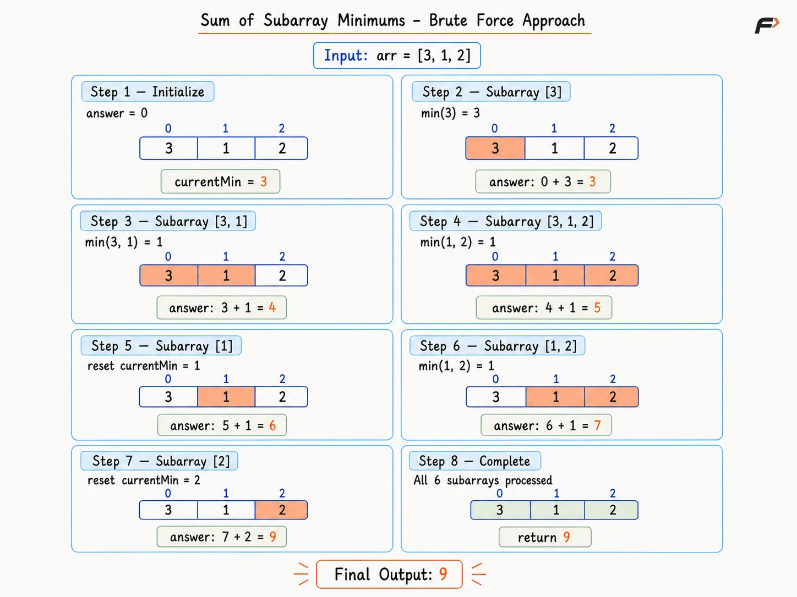
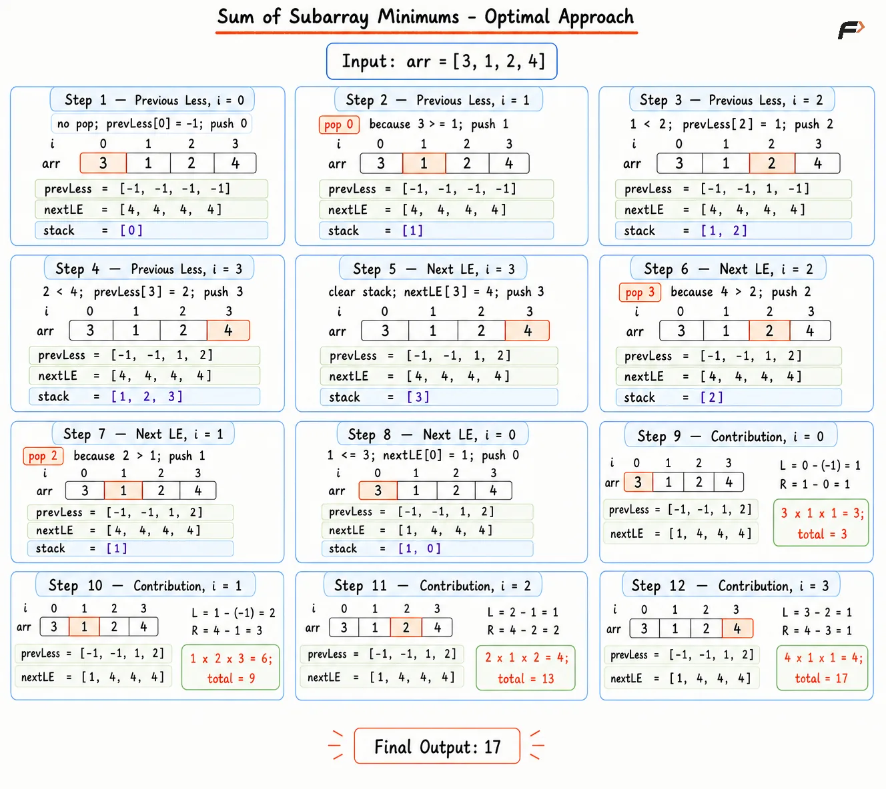

Sum of Subarray Minimums
Given an integer array arr, consider every contiguous, non-empty subarray. Find the minimum value in each subarray and return the sum of all such minimum values modulo 109 + 7.
Example 1
Input: arr = [3, 1, 2, 4]
Output: 17
Explanation: The subarrays and their minimum values are:
[3] → 3[3, 1] → 1[3, 1, 2] → 1[3, 1, 2, 4] → 1[1] → 1[1, 2] → 1[1, 2, 4] → 1[2] → 2[2, 4] → 2[4] → 4
Therefore, the sum of all subarray minimums is 3 + 1 + 1 + 1 + 1 + 1 + 1 + 2 + 2 + 4 = 17.
Example 2
Input: arr = [5]
Output: 5
Explanation: The only non-empty subarray is [5] → 5, so the sum of subarray minimums is 5.
Brute Force Approach
Every subarray can be formed by choosing a starting index and extending the ending index toward the right. As the subarray grows, only the newly added value can change its minimum.
Instead of scanning the complete subarray again, maintain a running minimum during each extension. This avoids an extra loop and allows the minimum of every subarray to be added immediately.
Algorithm
Initialize
answer = 0and store modulo109+ 7, because the total sum can become very large.Select every array index as the starting position of a subarray.
Set
currentMinimumto the starting value, because the first subarray contains only that element.Extend the ending index from the starting position to the end of the array, generating every subarray with the selected start.
Update
currentMinimumusing the smaller value between the existing minimum and the newly added element.Add
currentMinimumtoanswerafter every extension, because each ending index forms one new subarray.Apply modulo after every addition to keep the result within the required range.
Return the final value of
answerafter processing all subarrays.
Dry Run

sum-of-subarray-minimums-brute-force
Solution
#include <bits/stdc++.h>
using namespace std;
class Solution {
public:
// Return the sum of all subarray minimums
int sumSubarrayMins(vector<int>& arr) {
long long mod = 1000000007;
long long answer = 0;
int n = arr.size();
// Choose every possible starting index
for (int start = 0; start < n; start++) {
int currentMinimum = arr[start];
// Extend the current subarray to the right
for (int end = start; end < n; end++) {
// Keep the smallest value in the range
currentMinimum = min(currentMinimum, arr[end]);
// Add the minimum for the current subarray
answer = (answer + currentMinimum) % mod;
}
}
// Convert the modular result to the required type
return answer;
}
};
// Driver code
int main() {
vector<int> arr = {3, 1, 2, 4};
Solution obj;
cout << obj.sumSubarrayMins(arr) << endl;
return 0;
}Complexity Analysis
Time Complexity: O(N2), two nested loops visit every possible start-and-end pair once.
Space Complexity: O(1), only a few scalar variables are stored outside the input array.
Optimal Approach
Instead of finding the minimum separately for every subarray, consider each arr[i] and calculate how many subarrays have arr[i] as their minimum. Once this frequency is known, its total contribution becomes arr[i] × frequency.
For an element at index i, find how far it can extend toward the left and right while remaining the minimum. Let the previous strictly smaller element be the left boundary and the next smaller-or-equal element be the right boundary. Using a strict condition on one side and a non-strict condition on the other ensures that subarrays containing duplicate values are not counted more than once. Monotonic stacks allow both boundaries to be found efficiently.
If leftChoices starting positions and rightChoices ending positions are available, every left choice can be paired with every right choice. Therefore, the number of subarrays where arr[i] is the selected minimum is:
frequency = leftChoices × rightChoices
Its contribution to the final answer is then arr[i] × leftChoices × rightChoices.
Algorithm
Initialize
previousLesswith-1andnextLessOrEqualwithN, whereNis the size of the array. These values represent the absence of a valid boundary.Find the previous smaller elements for all indices:
Traverse the array from left to right using a monotonic stack of indices.
Remove indices while the stack-top value is greater than or equal to the current value, because the required left boundary must be strictly smaller.
If the stack is not empty, store its top as
previousLess[currentIndex]; otherwise, keep-1.Push the current index into the stack.
Find the next smaller or equal elements for all indices:
Clear the stack and traverse the array from right to left.
Remove indices while the stack-top value is greater than the current value, because the required right boundary may be smaller or equal.
If the stack is not empty, store its top as
nextLessOrEqual[currentIndex]; otherwise, keepN.Push the current index into the stack.
For every index, calculate:
leftChoices = currentIndex - previousLess[currentIndex]rightChoices = nextLessOrEqual[currentIndex] - currentIndex
Calculate
frequency = leftChoices × rightChoices, because each valid starting position can be paired with each valid ending position.Add
arr[currentIndex] × frequencyto the answer and apply modulo10^9 + 7.Return the final answer after processing every element.
Dry Run

Subarray Min Optimal
Solution
#include <bits/stdc++.h>
using namespace std;
class Solution {
private:
// Finds the previous strictly smaller index for every element.
vector<int> findPreviousLess(vector<int>& arr) {
int n = arr.size();
vector<int> previousLess(n, -1);
stack<int> indices;
// Scan from left to right for previous boundaries.
for (int i = 0; i < n; i++) {
// Remove values that are not strictly smaller.
while (!indices.empty() &&
arr[indices.top()] >= arr[i]) {
indices.pop();
}
// A remaining index is the previous smaller boundary.
if (!indices.empty()) {
previousLess[i] = indices.top();
}
// Save the current index for later elements.
indices.push(i);
}
return previousLess;
}
// Finds the next smaller-or-equal index for every element.
vector<int> findNextLessOrEqual(vector<int>& arr) {
int n = arr.size();
vector<int> nextLessOrEqual(n, n);
stack<int> indices;
// Scan from right to left for next boundaries.
for (int i = n - 1; i >= 0; i--) {
// Remove values that are strictly greater.
while (!indices.empty() &&
arr[indices.top()] > arr[i]) {
indices.pop();
}
// A remaining index is the next valid boundary.
if (!indices.empty()) {
nextLessOrEqual[i] = indices.top();
}
// Save the current index for earlier elements.
indices.push(i);
}
return nextLessOrEqual;
}
public:
// Returns the sum of all subarray minimums.
int sumSubarrayMins(vector<int>& arr) {
int n = arr.size();
long long mod = 1000000007;
vector<int> previousLess = findPreviousLess(arr);
vector<int> nextLessOrEqual = findNextLessOrEqual(arr);
long long answer = 0;
// Calculate each element's contribution as the minimum.
for (int i = 0; i < n; i++) {
long long leftChoices = i - previousLess[i];
long long rightChoices = nextLessOrEqual[i] - i;
// Count all subarrays where arr[i] owns the minimum.
long long contribution =
(arr[i] * leftChoices) % mod;
contribution =
(contribution * rightChoices) % mod;
// Add the current contribution to the answer.
answer = (answer + contribution) % mod;
}
return (int)answer;
}
};
// Driver code
int main() {
vector<int> arr = {3, 1, 2, 4};
Solution obj;
cout << obj.sumSubarrayMins(arr) << endl;
return 0;
}Complexity Analysis
Time Complexity: O(N), every index is pushed and popped at most once in each monotonic-stack scan, followed by one contribution scan.
Space Complexity: O(N), boundary arrays and the monotonic stack can each store up to N entries.
Interview follow-up Questions
Every subarray has one assigned minimum index. Multiplying an array value by the number of assigned subarrays adds exactly the same value as direct subarray enumeration.